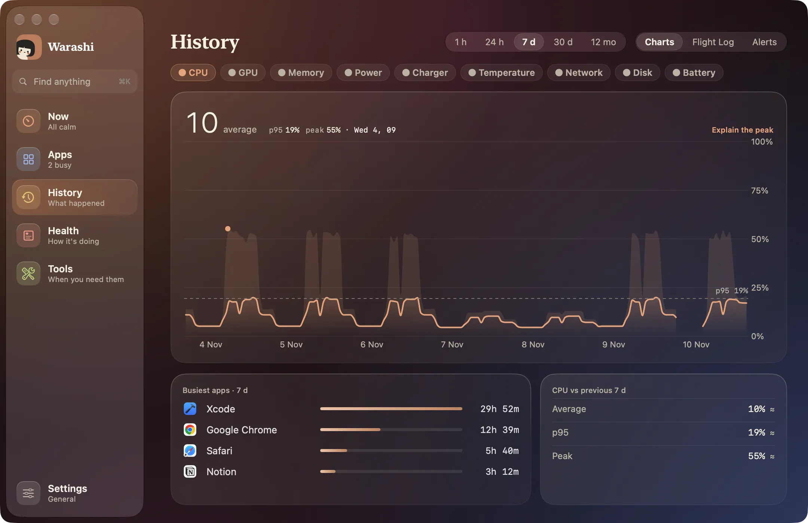
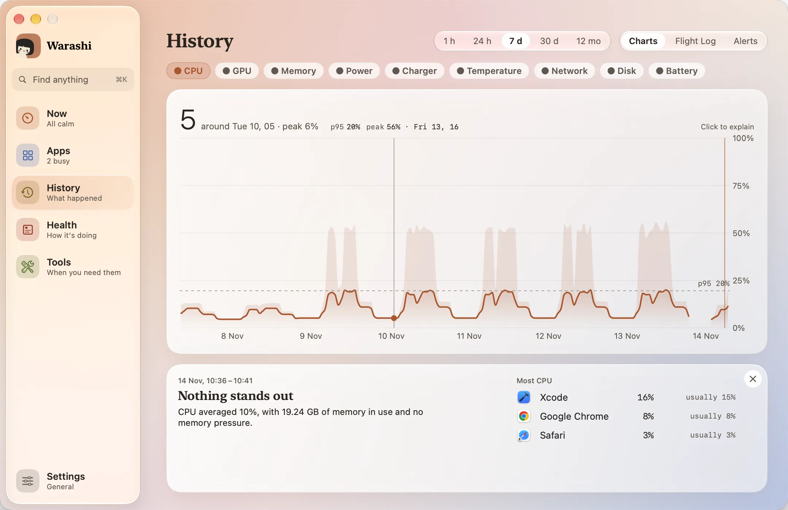
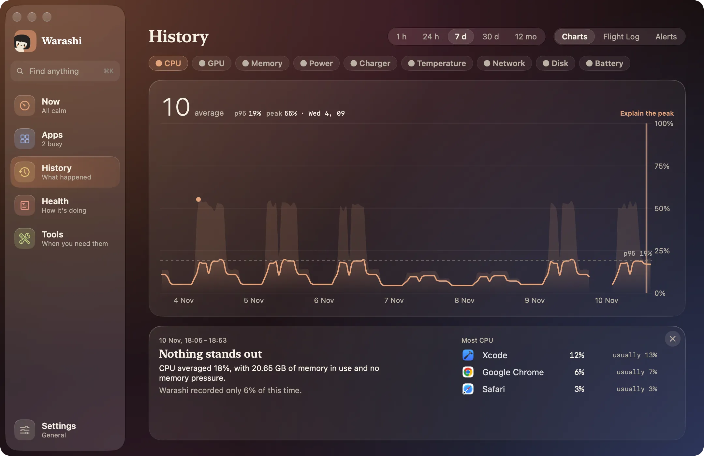

履歴こそが、Warashiをフライトレコーダーにしているものです。Macの数値を保存しておくので、何があったかをあとから振り返れます。タブはグラフ、フライトログ、アラートです。
- 履歴を開く
サイドバーで履歴を選ぶか、⌘3を押します。グラフが開きます。


- 期間を選ぶ
上部で1 h、24 h、7 d、30 d、12か月から選びます。
- 指標を選ぶ
CPU、GPU、メモリ、電力、充電器、温度、ネットワーク、ディスク、バッテリーから選びます。大きな数字はその期間の平均で、隣にp95とピークが表示されます。いずれもすべての測定値から算出しています。
- チャートをなぞる
グラフにポインタを合わせると、見出しがその時点の値に変わります。線は各区間の平均なので、傾向を読み取れます。その上の薄い帯は、その区間の最大値を示します。途切れている部分は何も記録されなかった時間で、たいていはスリープ中です。
- 原因のアプリを確認する
チャートの下に、その期間の負荷の大きいアプリと、直前の期間との比較が表示されます。
ここで何があった？
- ある時点をクリックする
チャートの任意の場所をクリックするか、上にあるピークの説明をクリックします。その時点がチャートにマークされ、下のタイルの代わりに説明が表示されます。


- 説明を読む
見出しがわかりやすい言葉で表示され、続いて根拠と、実行中だったアプリ（普段の使用量付き）が表示されます。特に変わったことがなければ、その旨が表示されます。表示されるアプリは当時実行されていたものであり、それが原因だったことを示すものではありません。
- さらに調べる
アプリをクリックするとそのドロワーが開きます。説明を閉じるには、右上の×をクリックします。
スリープとバッテリー
バッテリーチャートのタイルには、Macがスリープしていた、またはWarashiが記録していなかった最近の期間が、その長さ、スリープ解除の回数、バッテリー消費量とともに表示されます。その下に、現在このMacのスリープを妨げているものが表示されます。
保存される量
| 詳細度 | 保存期間 |
|---|---|
| 5秒ごと | 24時間 |
| 1分ごと | 30日間 |
| 1時間ごと | 12か月 |